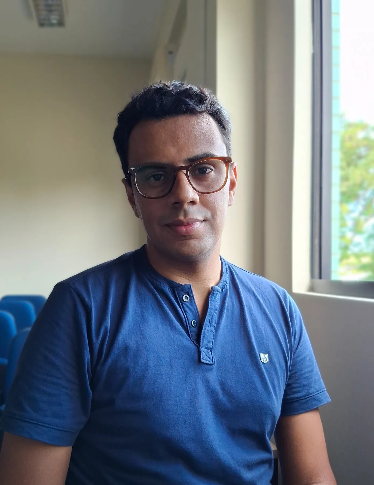
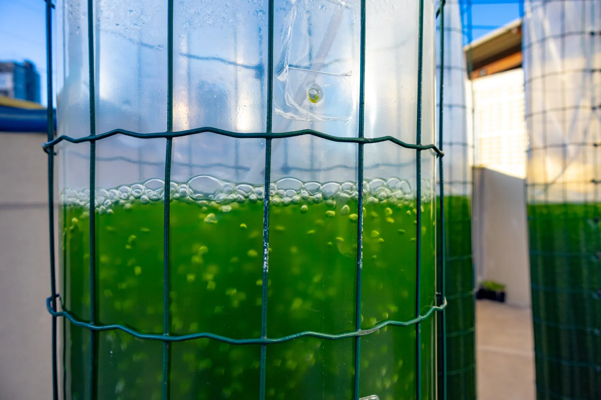

Jornalismo
Apuração, entrevista e texto — da universidade às histórias de ciência, cidade e pessoas.
Natal · Rio Grande do Norte · Brasil
jornalismo / imagem / comunicaçãoHistórias em texto, imagem e movimento.
Um espaço para percursos, olhares e projetos.
Um pouco de mim
Sou jornalista formado pela Universidade Federal do Rio Grande do Norte. Minha trajetória passa por reportagem, audiovisual, comunicação institucional, ciência e produção digital.
Este site não foi pensado como uma vitrine tradicional. É um espaço para reunir percursos, imagens, histórias e projetos que dizem algo sobre o modo como observo e comunico o mundo.

cidade · ciência · cultura · memória · cotidiano
Olhares
Uma seleção de imagens feitas ao longo do caminho. Cidade, litoral, interior, cultura popular, ciência e pequenos encontros.
Percursos
Apuração, entrevista e texto — da universidade às histórias de ciência, cidade e pessoas.
Transformar processos complexos em narrativas compreensíveis sem retirar sua precisão.
Roteiro, produção, edição e linguagem visual como continuação do texto.
Sites e experiências pensados para serem navegados, usados e descobertos.
Histórias
Aqui, os trabalhos deixam de ser apenas referência visual: os links levam diretamente às publicações disponíveis na web.

Ferramenta desenvolvida no LabTam estima a produção de hidrogênio renovável a partir de biogás e aproxima pesquisa, planejamento e setor produtivo.
Ler matéria ↗Pesquisa testa uma camada protetora para reduzir a degradação e ampliar a vida útil de uma tecnologia fotovoltaica mais leve e flexível.
Ler ↗ 02Reportagem produzida com Marina Gadelha sobre pessoas que vivem com HIV e as ações da UFRN em prevenção, diagnóstico e cuidado.
Ler ↗Arquivo
Uma seleção ampliada de matérias, reportagens e produções publicadas ao longo da trajetória — do jornalismo cultural e universitário aos trabalhos mais recentes de comunicação científica.
O arquivo reúne materiais localizados e conferidos em páginas públicas. Em trabalhos antigos da UFRN, alguns links originais deixaram de existir; nesses casos, foi usada uma republicação que preserva o texto ou o crédito de autoria.
Contato
Para conversar, colaborar ou acompanhar meu trabalho, estes são os caminhos que já estão públicos: